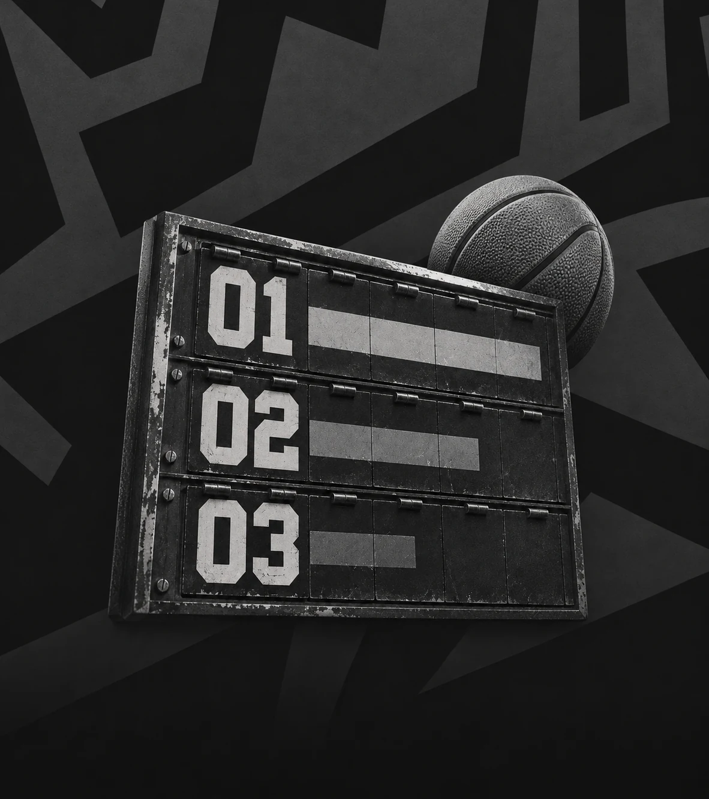

histórias e análises para ler o jogo além do placar.
por escrito
os nomes e caminhos da próxima geração do basquete.
draft
a linguagem do jogo, termo por termo, dentro de quadra.
glossário
leitura editorial dos melhores da base brasileira.
ranking
assuntos, artigos e conversas conectados pelo basquete.
colmeiapor quem vive o jogo.